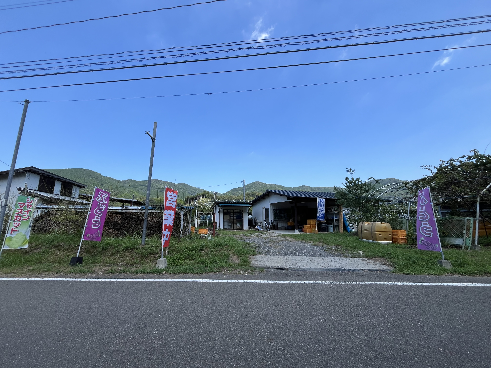
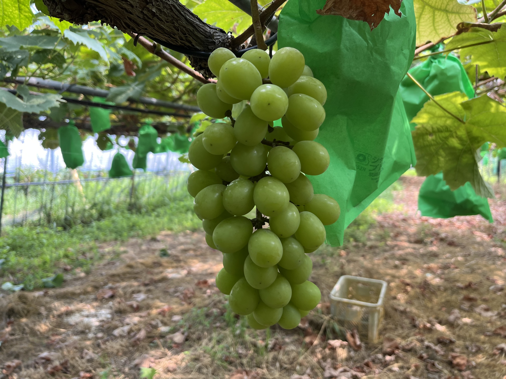
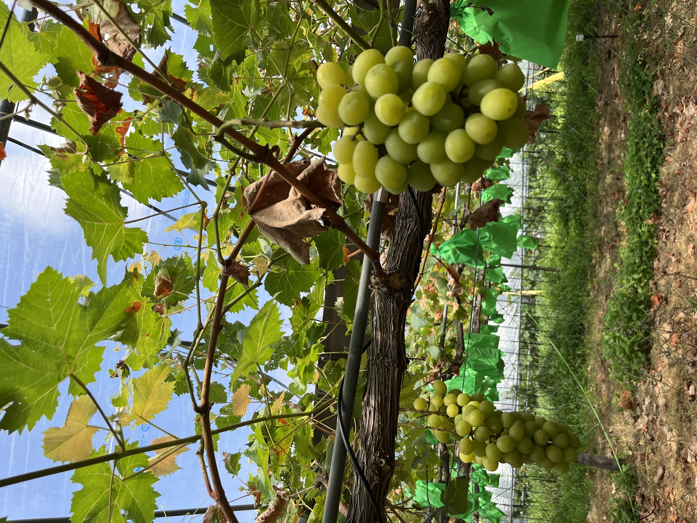
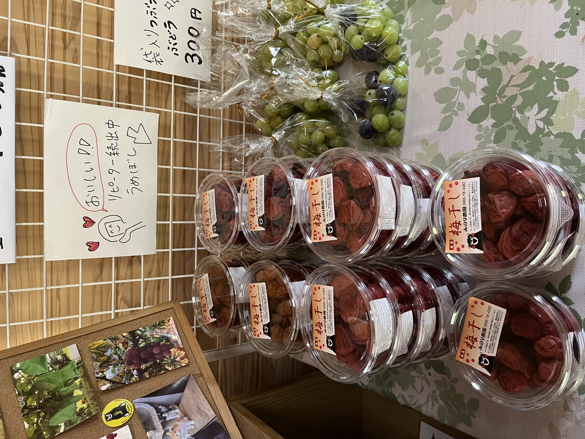

自然の恵みを大切に育てる
みのり農園
熊本の自然で育つぶどう農園
農園紹介
農園の想い
熊本県葦北郡津奈木町の豊かな自然の中で、私たちは毎日作物と向き合っています。「安心でおいしいものを届けたい」という想いを胸に、ひとつひとつ心を込めて育てています。
自然栽培について
土の力を活かし、自然の恵みを最大限に引き出す栽培方法を心がけています。太陽の光をたっぷり浴びた作物は、深い味わいと豊かな香りを持ちます。

取り扱っている商品

ぶどう
甘みが強く、果汁たっぷりのぶどう。旬の時期には農園での直売も行っています。熊本でぶどうをお探しの方はぜひ。

梅干し
昔ながらの製法でじっくりと漬け込んだ、無添加で手作りの梅干しです。ご飯のお供にぴったりです。
焼き芋
甘くてホクホクの焼き芋。熊本県育ちのさつまいもを厳選してじっくり焼き上げています。
こだわりの薪 販売・配達
Firewood
自然乾燥で含水率18%以下に仕上げた、
火持ちの良い高品質な広葉樹の薪です。
- 種類
- 広葉樹（樫の木・桜の木）
- サイズ
- 長さ：30～45cm
太さ：10cm以下は丸太、10cm以上は二分割から四分割 - 価格
-
約20kg 1,000円
※みかんコンテナ約1個分／訳あり製品は半額です。 - 配達エリア
-
【熊本県南部】八代市、人吉市、芦北町、津奈木町、水俣市
【鹿児島県】出水市
ご注文・ご予約はお電話またはメールで承ります。
最新情報・日常風景
みのり農園の最新情報や、日々の農作業の様子、作物の成長記録などはInstagramを中心に発信しております。
私たちの農園の「今」を写真や動画でお届けしていますので、ぜひご覧いただき、フォローをよろしくお願いいたします！
アクセス
お問い合わせ
ご質問や農作物のご購入に関するお問い合わせは、
お電話にて承っております。お気軽にご連絡ください。